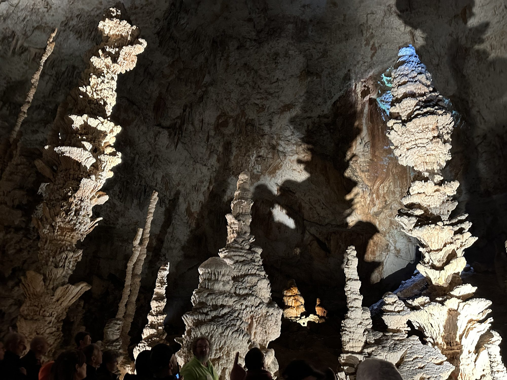

De Aven d'Orgnac werd bijna 90 jaar geleden ontdekt, niet ver van de Gorges de l'Ardèche, en is een waar ondergronds geologisch juweel, bovengronds aangevuld met een toonaangevend museum, de Cité de la Préhistoire. Het is vandaag de enige grot in Frankrijk met het label Grand Site de France, op ongeveer 1u15 van Les Cabritas.

Een ondergronds juweel van indrukwekkende omvang
De rondleiding voert door drie enorme zalen, met plafonds die op sommige plekken tot 55 meter hoog reiken. In een constante temperatuur van 12°C, het hele jaar door, zorgen de stilte en het lichtspel op de druipsteenformaties voor een indrukwekkende ervaring waarin de tijd lijkt stil te staan. De rondleiding duurt ongeveer een uur, met 700 treden naar beneden; een lift brengt u daarna moeiteloos weer naar boven.
De Cité de la Préhistoire
Bovengronds laat het Prehistorisch Museum het begin van de mensheid tot leven komen met digitale simulaties en demonstraties (vuur maken, vuursteen bewerken, speerwerpen), en werpt het een nieuw licht op de opgravingen in de Ardèche en het noorden van de Gard. De toegang tot de Cité de la Préhistoire is gratis; voor een bezoek aan de grot moet u reserveren.
Goed om te weten voor uw bezoek
Reken op ongeveer € 16,50 per volwassene en € 11 per kind (6-17 jaar, gratis onder de 6) voor het combiticket grot + Cité de la Préhistoire. Omdat de grot heel dicht bij de Gorges de l'Ardèche en de Grotte Chauvet 2 ligt, kunt u beide bezoeken gemakkelijk op één dag combineren. De temperatuur is het hele jaar gelijk, dus neem ook midden in de zomer een dunne trui mee.
Praktische informatie vanuit Les Cabritas
- Afstand vanaf Flaviac: ongeveer 1u15 rijden
- Afstand vanaf Saint-Alban-Auriolles: ongeveer 38 min rijden
- Beste periode: het hele jaar, ideaal op warme dagen
- Ideaal voor: gezinnen, geologieliefhebbers, uitjes bij elk weer
Zin om de Aven d'Orgnac te ontdekken vanuit uw vakantiehuis in de Ardèche?
Les Cabritas verwelkomt u in twee vakantiehuizen met privézwembad: in Flaviac, in het hart van de Ardèche, en in Saint-Alban-Auriolles, in het hart van de Zuid-Ardèche.